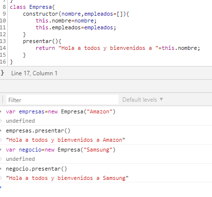
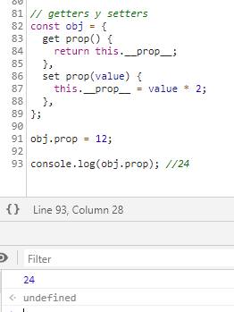

Necesitamos un modelo porque es una simplificación de la realidad, que nos permite reducir la complejidad que ofrece una visión desde una perspectiva particular y nos ayuda a razonar acerca de una relación entre las entidades.
Esta característica de simplificación se conoce generalmente como abstracción, y que a veces se considera uno de los principios de la programación orientada a objetos. Modelar la realidad no sólo implica la definición de objetos con características relevantes para un propósito específico. También incluye la definición de las relaciones entre los objetos, como Asociación, Agregación y Composición.
La asociación se refiere objetos autónomos. Esto significa que un objeto puede existir sin el otro, y no hay ningún objeto que posee al otro.
Como podemos ver en el ejemplo, se puede asociar entre objetos usando una simple referencia objeto a través de una propiedad.
La agregación es el mecanismo que le permite crear un objeto que consta de varios objetos.
Cada objeto tiene una vida es a menudo llamado agregar y el objeto de propiedad se llama componente. Sin embargo, cada objeto tiene una vida independiente.
Los objetos añadidos al objeto empleados ayuda a definir el objeto de la empresa, sino que son independientes de ella. Si se elimina el objeto de la empresa, cada una de las personas aún se conservan.
La composición es un tipo de agregación un poco mas intensa y detallada, donde cada objeto componente tiene vida independiente.
Tiene la capacidad de albergar en una sola entidad tanto datos (propiedades) y funciones (métodos), ocultando los detalles internos dando a conocer su mera acción.Este es un principio muy potente, que se encuentra a menudo en el mundo real que nos permite utilizar un objeto sin saber cómo funciona internamente.
Permite nuevos objetos para adquirir las propiedades de los objetos existentes. Esta relación entre dos objetos es muy común y se puede encontrar en muchas situaciones de la vida real. Por lo general, se refiere a la creación de un objeto especializado a partir de una más general. Es adquirir las propiedades y metodos existentes de un Padre(objeto) a un Hijo(objeto).

Tiene la capacidad de manejar múltiples tipos de datos de manera uniforme.se refiere al hecho de tener varios métodos con el mismo nombre y la misma implementación. el polimorfismo de clases, que consiste en que un objeto de una clase derivada es al mismo tiempo un objeto de la clase padre, de forma que allí donde se utilice un objeto de la clase padre también se puede utilizar uno de la clase hija.
Nos permite empaquetarlo en un objeto tanto los datos y funcionalidades que operan sobre esos datos.Utilizando los métodos expuestos por el objeto a manipular los datos, tomamos ventaja del principio de encapsulación haciendo caso omiso de su complejidad y los detalles de implementación interna.
. Esta característica, llamada el principio de ocultación de información, a menudo se relaciona con la encapsulación, aunque es un principio más general. El principio de ocultación de información hace cumplir el diseño de objetos que tiene al menos dos partes: una parte pública y una privada. Sólo la parte pública es accesible por los clientes que quieren interactuar con el objeto.
Todas las propiedades y métodos son de acceso público si no se toma ninguna precaución. Un primer enfoque sencillo consiste en la adopción de nombres basado en la convención de miembros internos de un objeto.
Por lo tanto, si queremos evitar el acceso a algunas propiedades o métodos relativos a los detalles de implementación interna, tenemos que establecer una estrategia.Static
El scope es el alcance de una variable, puede ser de dos tipos, global y local. Una variable cuyo scope es global se puede acceder desde cualquier parte del código, una local solo desde la función que la contiene.
Podemos acceder tanto fuera como dentro de una función debido a haberla definido fuera de cualquier función.

Podemos acceder a ella dentro dicha función, cuando ejecutamos local() te muestra correctamente 2, mientras que si haces console.log(a) te va a dar error porque a no esta definida, para el scope global esa variable no existe.
Un closure es una función que es libre de variables, esto quiere decir que las variables de la función padre funcionan, pero el closure no tiene variables propias.
Se trata de las envolturas de funciones que podemos crear para aislar un código fuente y evitar colisiones de variables o espacios de nombres en general.
El objeto WeakMap es una colección de pares clave/valor en la que las claves son objetos y los valores son valores arbitrarios. Las claves de los WeakMaps solamente pueden ser del tipo Object. Los Primitive data types como claves no están permitidos (ej. un Symbol no pueden ser una clave de WeakMap).
Una función que obtiene un valor de una propiedad se llama getter y una que establece el valor de una propiedad se llama setter. Esta característica a sido implementada en ES2015, pudiendo modificar el funcionamiento normal de establecer u obtener el valor de una propiedad, a estas se les conoce como accessor properties.
En ocasiones queremos valores basados en otros valores, para esto los data accessors son bastante útiles. Para crearlos usamos los keywords get y set
La aplicación del principio de ocultación de información utilizando las mejoras de sintaxis ES6 no es tan diferente. Como dijimos en la introducción de ellos, clases ES6 no son más que un nuevo enfoque sintáctico para definir métodos y constructores para nuestros objetos. Los principale beneficios incluyen una sintaxis más concisa y la aplicación de las mejores prácticas en la implementación interna de la creación de objetos.